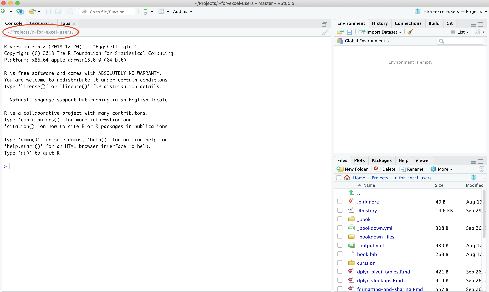

Chapter 2 Overview
2.1 Summary (a few sentences)
2.2 Objectives (more detailed, bulletpoints?)
- working with data that are not your own.
2.3 Resources
R is not only a language, it is an active community of developers, users, and educators (often these traits are in each person). This workshop and book based on many excellent materials created by other members in the R community, who share their work freely to help others learn. Using community materials is how WE learned R, and each chapter of the book will have Resources listed for further reading into the topics we discuss. And, when there is no better way to explain something (ahem Jenny Bryan), we will quote or reference that work directly.
- What They Forgot to Teach You About R — Jenny Bryan & Jim Hester
- Stat545 — Jenny Bryan & Stat545 TAs
- Where do Things Live in R? REX Analytics
2.4 Overview
Welcome.
This workshop you will learn hands-on how to begin to interoperate between Excel and R.
A main theme throughout is to produce analyses people can understand and build from — including Future You. Not so brittle/sensitive to minor changes.
We will learn and reinforce X main things all at the same time: coding with best practices (R/RStudio), how this relates to operations in Excel, Z. This training will teach these all together to reinforce skills and best practices, and get you comfortable with a workflow that you can use in your own projects.
2.4.1 What to expect
This is going to be a fun workshop.
The plan is to expose you to X that you can have confidence using in your work. You’ll be working hands-on and doing the same things on your own computer as we do live on up on the screen. We’re going to go through a lot in these two days and it’s less important that you remember it all. More importantly, you’ll have experience with it and confidence that you can do it. The main thing to take away is that there are good ways to work between R and Excel; we will teach you to expect that so you can find what you need and use it! A theme throughout is that tools exist and are being developed by real, and extraordinarily nice, people to meet you where you are and help you do what you need to do. If you expect and appreciate that, you will be more efficient in doing your awesome science.
You are all welcome here, please be respectful of one another. You are encouraged to help each other.
Everyone in this workshop is coming from a different place with different experiences and expectations. But everyone will learn something new here, because there is so much innovation in the data science world. Instructors and helpers learn something new every time, from each other and from your questions. If you are already familiar with some of this material, focus on how we teach, and how you might teach it to others. Use these workshop materials not only as a reference in the future but also for talking points so you can communicate the importance of these tools to your communities. A big part of this training is not only for you to learn these skills, but for you to also teach others and increase the value and practice of open data science in science as a whole.
2.4.2 What you’ll learn
TODO: dev
- Motivation is to bridge and/or get out of excel
- We’re not going to replicate all of your fancy things in R,
- We use Excel to look at data that we’re reading into R
- Spreadsheets are great; blend data entry with analyses and we’re going to try to help you think about them a bit more distinctively.
- Most important collaborator is future you, and future us
An important theme for this workshop is being deliberate about your analyses and setting things up in a way that will make your analytical life better downstream in the current task, and better when Future You or Future Us revisit it in the future (i.e. avoiding: what happens next? What does this name mean?)
This graphic by Hadley Wickham and Garrett Grolemund in their book R for Data Science is simple but incredibly powerful:
You may not have ever thought about analysis in such discrete steps: I certainly hadn’t before seeing this. That is partly because in Excel, it can be easy to blend these steps together. We are going to keep them separate, and talk about why. The first step is Import: and implicit in this as a first step is that the data is stored elsewhere and is not manipulated directly, which keeps the raw data raw.
We will be focusing on:
- Import:
readr,readxlto read raw data stored in CSV or Excel files directly into R - Tidy:
tidyrto (re)organize rows of data into unique values - Transform:
dplyrto “wrangle” data based on subsetting by rows or columns, sorting and joining - Visualize:
ggplot2static plots, using grammar of graphics principles - Communicate
writexlto export intermediate and final data- GitHub File Upload and Issues for online publishing and collaboration
2.4.3 Emphasizing collaboration
TODO: rewrite/update (from OHI book):
Collaborating efficiently has historically been really hard to do. It’s only been the last 20 years or so that we’ve moved beyond mailing things with the postal service. Being able to email and get feedback on files through track changes was a huge step forward, but it comes with a lot of bookkeeping and reproduciblity issues (did I send that report based on analysis_final_final.xls or analysis_final_usethisone.xls?). But now, open tools make it much easier to collaborate.
Working with collaborators in mind is critical for reproducibility. And, your most important collaborator is Future You. This training will introduce best practices using open tools, so that collaboration will become second nature to you!
2.4.4 By the end of the course…
By the end of this course you’ll produce this report that you can reproduce, which means… Introduce the problem we will solve. Eg: (just an idea maybe time-series is not a great idea) SMALL PROBLEM. (4 mins) Show data files, We will discuss our analysis plan (only enough to motivate!) Create a report, that looks great.
2.5 RStudio Orientation
Open RStudio for the first time.
Launch RStudio/R.

Notice the default panes:
- Console (entire left)
- Environment/History (tabbed in upper right)
- Files/Plots/Packages/Help (tabbed in lower right)
FYI: you can change the default location of the panes, among many other things: Customizing RStudio.
An important first question: where are we?
If you’ve have opened RStudio for the first time, you’ll be in your Home directory. This is noted by the ~/ at the top of the console. You can see too that the Files pane in the lower right shows what is in the Home directory where you are. You can navigate around within that Files pane and explore, but note that you won’t change where you are: even as you click through you’ll still be Home: ~/.

2.5.1 RStudio Projects
Create a new Project called ‘r-for-excel-users’. File > New Project… > New Directory > New Project. Give your Project a name browse to a place to keep it. And then click to Create Project!
What is a Project? It is a way to organize all of the relevant things you need for an analysis in the same place. This means data, code, figures, notes, etc.
Why does this matter? Keeping everything you need for your analysis together makes it less brittle and more portable — across people, time, and computers.
Working directory = no file path/broken path issues. Notice that a folder now appears wherever you saved this project with the same name, and it contains a .Rproj file.
Now that we have our Project, here is an important question: where are we? Now we are in our Project. Everything we do will by default be saved here so we can be nice and organized.

2.5.2 R Console
Watch me work in the Console.
I can do math:
52*40
365/12TODO: refine
But like Excel, the power comes not from doing small operations by hand (like 8*22.3), it’s by being able to operate on whole suites of numbers and datasets. In Excel, data are stored in the spreadsheet. In R, they are stored in dataframes, and named as variables.
R stores data in variables, and you give them names. This is a big difference with Excel, where you usually identify data by by its location on the grid, like $A1:D$20. (You can do this with Excel by naming ranges of cells, but most people don’t do this.)
Data can be a variety of formats, like numeric and text.
Let’s have a look at some data in R. R has several built-in data sets that we can look at and work with.
One of these datasets is called mtcars. If I write this in the Console, it will print the data in the console.
mtcarsI can also use RStudio’s Viewer to see this in a more familiar-looking format:
View(mtcars)This opens the fourth pane of the RStudio IDE; when you work in R you will have all four panes open so this will become a very comforting setup for you.
The basic R data structure is a vector. You can think of a vector like a column in an Excel spreadsheet with the limitation that all the data in that vector must be of the same type. If it is a character vector, every element must be a character; if it is a logical vector, every element must be TRUE or FALSE; if it’s numeric you can trust that every element is a number. There’s no such constraint in Excel: you might have a column which has a bunch of numbers, but then some explanatory test intermingled with the numbers. This isn’t allowed in R. - https://blog.shotwell.ca/posts/r_for_excel_users/
In the Viewer I can do things like filter or sort. This does not do anything to the actual data, it just changes how you are viewing the data. So even as I explore it, I am not editing or manipulating the data.
Like Excel, some of the biggest power in R is that there are built-in functions that you can use in your analyses (and, as we’ll see, R users can easily create and share functions, and it is this open source developer and contributor community that makes R so awesome).
So let’s look into some of these functions. In Excel, there is a “SUM” function to calculate a total. Let’s expect that there is the same in R. I will type this into the Console:
?sumA few important things to note:
R is case-sensitive. So “sum” is a completely different thing to “Sum” or “SUM”. And this is true for the names of functions, data sets, variable names, and data itself (“blue” vs “Blue”).
RStudio has an autocomplete feature that can help you find the function you’re looking for. In many cases it pops up as you type, but you can always type the tab key (above your caps lock key) to prompt the autocomplete. And, bonus: this feature can help you with the case-sensitivity mentioned above: If I start typing “?SU” and press tab, it will show me all options starting with those two letters, regardless of capitalization (although it will start with the capital S options).
OK but what does typing ?sum actually do?
When I press enter/return, it will open up a help page in the bottom right pane. Help pages vary in detail I find some easier to digest than others. But they all have the same structure, which is helpful to know. The help page tells the name of the package in the top left, and broken down into sections:
- Description: An extended description of what the function does.
- Usage: The arguments of the function and their default values.
- Arguments: An explanation of the data each argument is expecting.
- Details: Any important details to be aware of.
- Value: The data the function returns.
- See Also: Any related functions you might find useful.
- Examples: Some examples for how to use the function.
When I look at a help page, I start with the description, which might be too in-the-weeds for the level of understanding I need at the offset. For the sum page, it is pretty straight-forward and lets me know that yup, this is the function I want.
I next look at the usage and arguments, which give me a more concrete view into what the function does. This syntax looks a bit cryptic but what it means is that you use it by writing sum, and then passing whatever you want to it in terms of data: that is what the “…” means. And the “na.rm=FALSE” means that by default, it will not remove NAs (I read this as: “remove NAs? FALSE!”)
Then, I usually scroll down to the bottom to the examples. This is where I can actually see how the function is used, and I can also paste those examples into the Console to see their output. Best way to learn what the function actually does is seeing it in action. Let’s try:
sum(1:5)So this is calculating the sum of the numbers from 1 and 5; that is what that 1:5 syntax means in this case. We can check it with the next example:
sum(1, 2, 3, 4, 5)Awesome. Let’s try this on our mtcars data
sum(mtcars)Alright. What is this number? It is the sum of ALL of the data in the mtcars dataset. Maybe in some analysis this would be a useful operation, but I would worry about the way your data is set up and your analyses if this is ever something you’d want to do. More likely, you’d want to take the sum of a specific column. In R, you can do that with the $ operator.
Let’s say we want to calculate the total number of gears that all these cars have:
sum(mtcars$gear)2.6 Deep thought
How would you do this in Excel? The calculations are usually the same shape as the data. In other words if you want to multiply 20 numbers stored in cells A1:An by 2, you will need 20 calculations: =A1 * 2, =A2 * 2, …., =An * 2.
OK so now that we’ve got a little bit of a feel for R and RStudio, let’s do something much more interesting and really start feeling its power.
2.7 R Scripts
OK so working in the Console is great for quick things, but it gets messy. Keeping track at what I’ve done and trying to build upon it would be a nightmare.
Instead of working in the Console, we can be more organized by writing analyses in a script. This is a really powerful way to work in R. TODO dev more Scripts are a written record of the analyses you do, unlike Excel. And they can be re-run easily…
In this script, we’re going to make our first figure in R. Let’s all do this together.
File > New File > R Script.
This is a blank slate for us to write our code; but there are some good practices we can start off with. Let’s add a useful header to the top of it. For example, at a minimum:
# --------------------------------
# A descriptive title
# Your name
# Contact information
# Date
# --------------------------------And then let’s save it, naming it something like “my_first_figure.R”. Let’s get into good habits now with this filename: no spaces! Use underscores _ or dashes - or no space at all.
Since we’re working in or Project, this script is now nicely saved in our Project. You can see our .R show up in our Files pane on the bottom right.
Let’s attach a package. Since you’ve already installed tidyverse,
# Attach the tidyverse
library(tidyverse)What is the tidyverse? TODO - ggplot2
Let’s look at one of the datasets that is built into the ggplot2 package. Type this into your R script:
View(diamonds)So this is not immediately executed like when we were typing in the Console. That’s because an R script is really just a text file that doesn’t do anything on its own; you need to tell R to execute it. You do that in a few ways (let’s do each of them):
- copy-paste this line into the console.
- click Run (with green arrow at the top-right of your script) to run the line where your cursor is or any highlighted selection
- click Source (top right of your script) to run the whole script.
Now let’s plot it. Type this or copy-paste and then we’ll discuss:
ggplot(diamonds, aes(x = carat, y = price)) +
geom_point()
2.7.1 Deep thought: Error messages are your friends
As Jenny Bryan says:
Implicit contract with the computer / scripting language: Computer will do tedious computation for you. In return, you will be completely precise in your instructions. Typos matter. Case matters. Pay attention to how you type.
Remember that this is a language, not unsimilar to English! There are times you aren’t understood – it’s going to happen. There are different ways this can happen. Sometimes you’ll get an error. This is like someone saying ‘What?’ or ‘Pardon’? Error messages can also be more useful, like when they say ‘I didn’t understand what you said, I was expecting you to say blah’. That is a great type of error message. Error messages are your friend. Google them (copy-and-paste!) to figure out what they mean.
And also know that there are errors that can creep in more subtly, when you are giving information that is understood, but not in the way you meant. Like if I am telling a story about suspenders that my British friend hears but silently interprets in a very different way (true story). This can leave me thinking I’ve gotten something across that the listener (or R) might silently interpreted very differently. And as I continue telling my story you get more and more confused… Clear communication is critical when you code: write clean, well documented code and check your work as you go to minimize these circumstances!
2.8 Don’t save the workspace
2.9 Deep thought: keep the raw data raw.
Discussing using Excel for variables.
Horror Stories! Economist etc. –
Mine: genetics example doesn’t hit home as much as Durham bike accidents where age groups are converted to dates just by opening the bloody csv in excel
2.10 Activity 1
2.11 Activity 2
2.12 Efficiency Tips
2.13 Troubleshooting
Here are some additional things we didn’t have time to discuss:
2.13.1 I entered a command and nothing’s happening
It may be because you didn’t complete a command: is there a little + in your console? R is saying that it is waiting for you to finish. In the example below, I need to close that parenthesis.
> x <- seq(1, 10
+